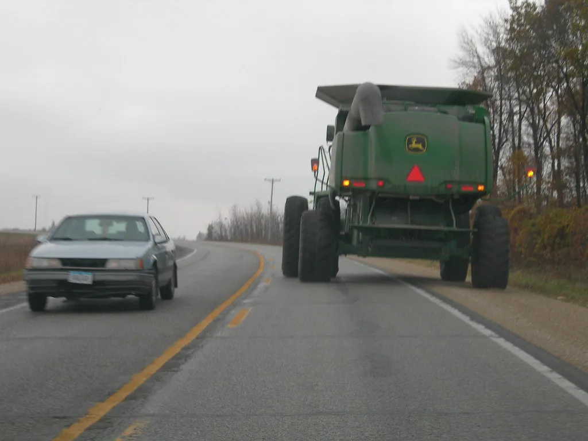

상주영천고속도로서 9중 추돌 화재…6명 부상
지난 15일 오전 대구 군위군 효령면 금매리 상주영천고속도로 서울방향 47㎞ 지점에서 차량 9대가 잇따라 부딪히는 추돌 사고가 발생해 6명이 다쳤다. 사고는 오전 10시47분쯤 일어났으며, 충돌 직후 일부 차량에서 불이 붙었다. 소방당국이 현장에 출동해 화재를 완전히 진화했고, 부상자들은 인근 병원으로 옮겨져 치료를 받은 것으로 전해졌다. 경찰과 소방당국은 정확한 사고 경위를 조사하고 있다.
상주영천고속도로는 경북 상주와 영천을 잇는 구간으로, 산악지형을 관통하는 터널과 교량 구간이 많아 안개나 시야 확보가 어려운 상황에서 대형 추돌 사고가 반복돼온 곳이다. 실제로 지난해 5월에도 이 고속도로 달산1교 인근에서 29중 추돌 사고가 발생해 다수의 사상자가 나온 바 있다. 당시 사고에서는 추돌 이후 화재까지 겹치면서 미처 차량에서 빠져나오지 못한 일부 탑승자가 목숨을 잃기도 했다. 이 때문에 지역에서는 이 구간을 두고 사고가 나면 대형 참사로 이어지기 쉬운 도로라는 우려가 꾸준히 제기돼왔다.

이번 사고 역시 다수 차량이 연쇄적으로 충돌한 뒤 화재로 이어졌다는 점에서 과거 사고와 유사한 양상을 보였다는 지적이 나온다. 다만 이번에는 사망자 없이 부상자 6명 선에서 피해가 마무리된 것으로 파악됐다. 소방당국의 신속한 초기 진화와 대응이 인명 피해를 줄이는 데 영향을 미쳤을 가능성이 제기되지만, 정확한 사고 원인과 화재 확산 경로에 대해서는 아직 조사가 진행 중이다.
고속도로 다중 추돌 사고는 여름철 국지성 소나기나 안개로 인한 시야 제한, 앞차와의 안전거리 미확보 등이 주요 원인으로 꼽힌다. 최근 전국적으로 대기가 불안정한 날씨가 이어지면서 고속도로 주행 중 갑작스러운 시야 저하로 인한 추돌 위험이 커지고 있다는 지적도 나온다. 특히 다수 차량이 얽히는 연쇄 추돌은 초기 충격만으로 끝나지 않고 뒤따르던 차량들이 잇따라 부딪히면서 피해 규모가 눈덩이처럼 커지는 경우가 많아, 전문가들은 앞차와의 거리를 평소보다 넉넉히 두고 이상 징후가 보이면 미리 속도를 줄이는 습관이 중요하다고 조언한다. 도로공사와 경찰은 사고 다발 구간에 대한 안전시설 점검과 함께, 운전자들에게 충분한 안전거리 확보와 감속 운행을 당부하고 있다.

지역 주민과 운전자들 사이에서는 반복되는 사고를 계기로 상주영천고속도로에 대한 근본적인 안전 대책이 필요하다는 목소리가 다시 나오고 있다. 터널과 교량이 밀집한 구간 특성상 사고 발생 시 대피와 초기 대응이 어려운 만큼, 조명·환기 시설 개선이나 사고 예방을 위한 첨단 감지 시스템 도입 등이 대안으로 거론된다. 관계 당국은 이번 사고를 계기로 해당 구간에 대한 안전 점검을 강화하겠다는 방침을 밝힌 것으로 전해졌다.
경찰은 사고 당시 블랙박스 영상과 목격자 진술 등을 토대로 최초 추돌 차량과 정확한 사고 발생 원인을 조사하고 있으며, 조사 결과에 따라 관련자에 대한 책임 소재도 가려질 전망이다. 이번 사고로 다친 6명의 정확한 부상 정도는 아직 공식적으로 확인되지 않았으며, 당국은 추가 피해 상황 파악과 함께 재발 방지 대책 마련에도 나설 계획이다. 이런 다중 추돌 사고가 발생하면 통상 진화와 사고 차량 견인이 끝날 때까지 해당 차로의 통행이 제한되면서 뒤따르는 차량들의 정체로 이어지는 경우가 많아, 고속도로 이용객들의 각별한 주의가 요구된다.